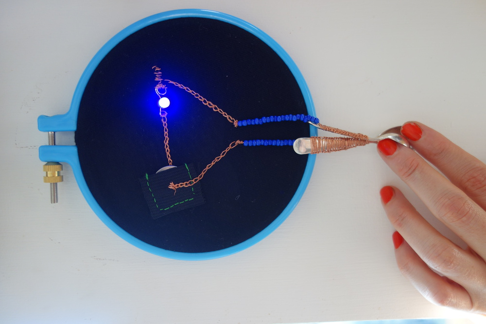
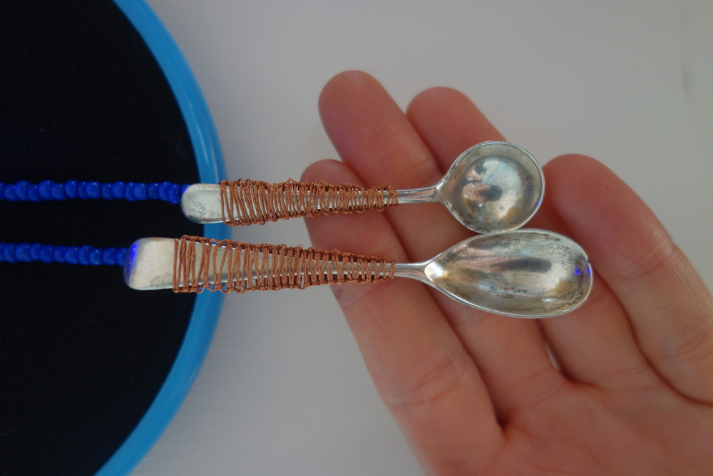
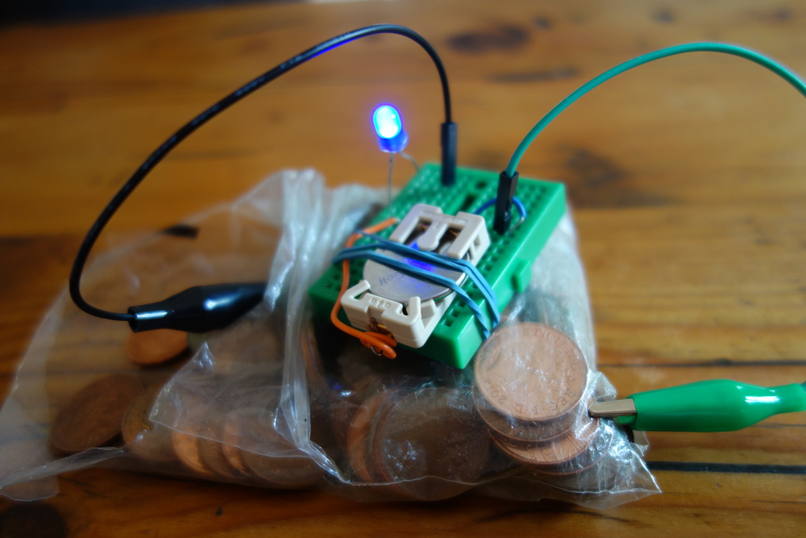
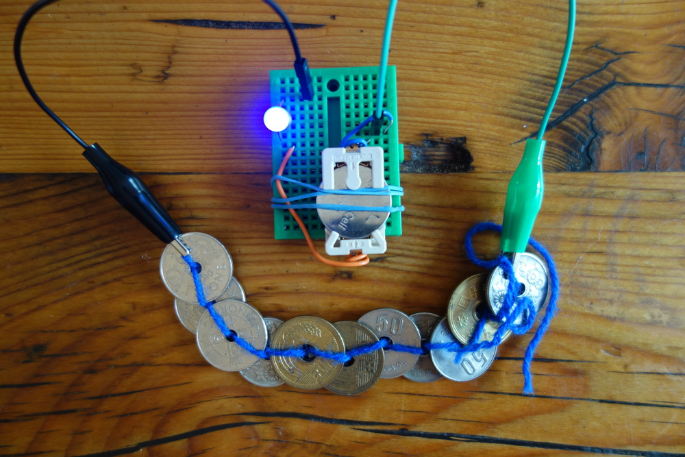
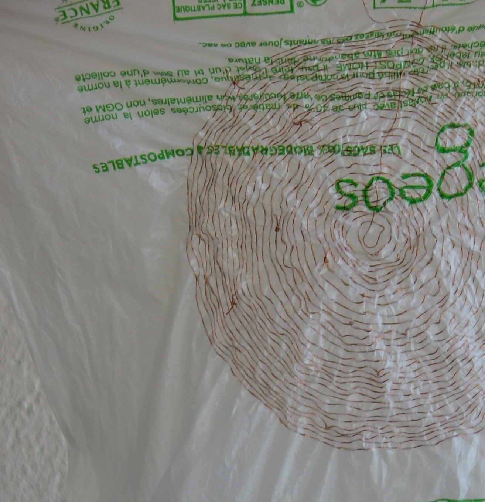

Sparse sensors responds to the availbilty of materal and resorces in making sensors with rubbish or scraps, or things on hand. The matter of sensors is entwined with how systems shape the way we see the world. Much of the data that these sensors prdoduce feeds into perceptions of the environmet - such as levels of particualte matter in the air, or water depth. The machines that produce these data are material instruments, collecting infomration in matterial ways.


The matter of sensors is entwined with how systems shape the way we see the world. Much of the data that these sensors prdoduce feeds into perceptions of the environmet - such as levels of particualte matter in the air, or water depth. The machines that produce these data are material instruments, collecting infomration in matterial ways.


The machines that produce these data are material instruments, collecting infomration in matterial ways.





Make a speaker by coiling adhesive copper or sewing copper thread into soft materials. You can hear the vibration of materials like plastics when they move from the force between a magnetic field, and an oscillating electromagnetic field made by the coiled copper.